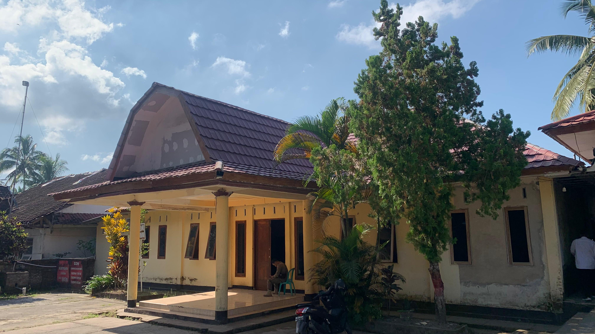

Profil Dinas

Desa Pengadang yang berada diwilayah Kecamatan Praya Tengah Kabupaten Lombok Tengah, berdiri pada tahun 1969 dengan Kepala Desa yang pertama adalah MACHSUN sedangkan pada awal mulanya Desa Pengadang. sebelum menjadi sebuah Desa hanyalah merupakan dusun-dusun biasa berada diwilayah Desa Jurang Jaler pecah menjadi empat Desa diantaranya yaitu Desa Pengadang Desa Beraim Desa Jontlak dan Desa Jurang Jaler sendiri. sedangkan dari asal mula dari nama Pengadang itu sendiri adalah “ MORE “tetapi karena adanya suatu peristiwa bersejarah yaitu peristiwa perang antara Bali dengan Lombok yang berkecamuk sebelum datangnya Belanda ke Lombok.Desa Pengadang yang berada diwilayah Kecamatan Praya Tengah Kabupaten Lombok Tengah,berdiri pada tahun 1969 dengan Kepala Desa yang pertama adalah MACHSUN sedangkan pada awal mulanya Desa Pengadang sebelum menjadi sebuah Desa hanyalah merupakan dusun-dusun biasa berada diwilayah Desa Jurang Jaler pecah menjadi empat Desa diantaranya yaitu Desa Pengadang Desa Beraim Desa Jontlak dan Desa Jurang Jaler sendiri. sedangkan dari asal mula dari nama Pengadang itu sendiri adalah “ MORE “tetapi karena adanya suatu peristiwa bersejarah yaitu peristiwa perang antara Bali dengan Lombok yang berkecamuk sebelum datangnya Belanda ke Lombok. Desa Pengadang yang berada diwilayah Kecamatan Praya Tengah Kabupaten Lombok Tengah,berdiri pada tahun 1969 dengan Kepala Desa yang pertama adalah MACHSUN sedangkan pada awal mulanya Desa Pengadang sebelum menjadi sebuah Desa hanyalah merupakan dusun-dusun biasa berada diwilayah Desa Jurang Jaler pecah menjadi empat Desa diantaranya yaitu Desa Pengadang Desa Beraim Desa Jontlak dan Desa Jurang Jaler sendiri.sedangkan dari asal mula dari nama Pengadang itu sendiri adalah “ MORE “tetapi karena adanya suatu peristiwa bersejarah yaitu peristiwa perang antara Bali dengan Lombok yang berkecamuk sebelum datangnya Belanda ke Lombok. Desa Pengadang yang berada diwilayah Kecamatan Praya Tengah Kabupaten Lombok Tengah, sekilas tentang peristiwa bersejarah yang pernah terjadi di Pulau Lombok yang tempatnya berlangsung di More sehingga diabadikan menjadi nama sebuah desa yaitu ‘ Desa Pengadang “ sehingga yang menjadi Kepala Desa dari
- 1. Tahun 1969 s/d 1985 adalah MACHSUN ( Alm )
- 2.Tahun 1985 s/d 1990 adalah NAPIAH ( Alm )
- 3.1990 s/d 1997 adalah MOHAMMAD NATSIR, SH
- 4.Tahun 1998 s/d 2006 adalah HAJI SYUKRI
- 5.Tahun 2007 s/d 2012 adalah M.HAMDIANA, S.Pd
- 6.Tahun 2012 s/d 2018 adalah MOH.KASIM, S.Pd
- 7.Tahun 2018 s/d 2024 adalah ZAINAL ABIDIN ( sekarang)
Letak Geografis dan Tofografi
Desa Pengadang merupakan salah satu Desa di Kecamatan Praya Tengah yang terletak dipaling Utara yang berbatasan dengan Kecamatan Kopang dan Janapria,dengan ketinggian sekitar ± 187 M diatas permukaan laut ( 187 M dpl ) beriklim Tropis curah hujan rata-rata 845 Mm pertahun,kadang-kadang musim kemarau lebih panjang dari pada musim hujan,biasanya hujan turun pada bulan Oktober sampai dengan bulan April,suhu udara rata-rata sekitar 35ºC.
Topografi berupa dataran rendah bukan Pantai.
Batas wilayah Desa Pengadang adalah sebagai berikut :
Utara : Desa Darmaji Kecamatan Kopang
Sebelah Timur : Desa Bakan Kec. Janapria dan Desa Beraim
Sebelah Selatan : Desa Jurang Jaler Kecamatan Praya Tengah
Sebelah Barat : Desa Monggas Kecamatan Kopang